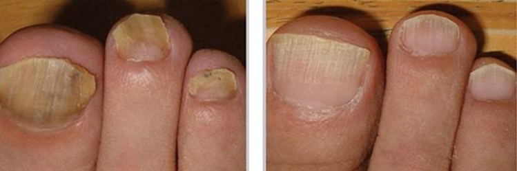
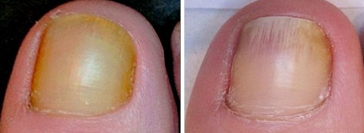
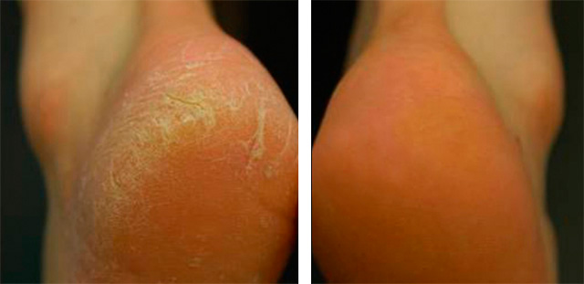

Micoza picioarelor și a unghiilor este periculoasă pentru sănătatea omului!

În anul , la Institutul Central au fost finalizate cu succes testele clinice ale unui preparat de generație nouă - , creat pentru lupta cu micoza picioarelor și a unghiilor. Serviciul de presă al institutului a făcut public următoarele:
1. Eficacitatea , calcuată după metoda standart (numărul de persoane
însănătoșite în raport cu numărul bolnavilor în grup de 100 persoane, ce au fost
supuse tratamentului) a constituit:
– vindecarea de micoză a picioarelor – 99%
– vindecarea de micoză a unghiilor – 100%.
*Prin însănătosire, în cazul dat, se înțelege vindecarea de micoză și lipsa
recidivelor în decursul a 6 luni.
2. Efecte adverse nedorite, inclusiv reacții alegice, nu au fost
depistate.
3. a fost recunoscut ca un preparat de frunte în lupta cu micoza
picioarelor și unghiilor.
Comentariile cercetătorilor:
dl Dumitru Porescu
Doctor în științe medicale, profesor de categorie superioară, adjunctul
medicului-șef în medicina recuperatoare.
Stagiul de mucă – 28 ani
Există o părere greșită, că apariția micozei pe unghii și pielea picioarelor este doar o problemă de estetică, ce este legată, în majoritatea cazurilor, de schimbările din organizm, datorate vârstei, sau de traumarea unghiei.
De fapt, micoza este un inamic periculos. În procesul său de viață ea eliberează în organizm toxine, care sunt cauza reducerii imunității, cauza bolilor organelor interne și reacțiilor alergice complicate.
În al treilea stadiu al micozei unghiilor (de atrofiere) partea
afectată a unghiei se atrofiază și se separă de patul unghial.
Forma intertriginoasă a ciupercii piciorului este o lezare a
pliurilor pielii. Poate fi însoțită de senzații foarte dureroase și
neplăcute
Despre problemă:
Pentru început puțină statstică: fiecare al cincilea locuitor al Terrei suferă de boli micotice ale picioarelor și unghiilor. Motivele apariției acestora sunt cele mai diverse – de la imunitatea slăbită până la încălțămintea nepotrivit aleasă.
Micoza unghiilor, sau dacă e să utilizăm termenii medicali - onicomicoza, prezintă un pericol destul de serios la stadiile târzii ale bolii. Onicomicoza de lungă durată poate provoca o reacție alergică, poate slăbi imunitatea și duce la acutizarea bolilor cronice. Adică, dacă aveți oarece boli cronice, atunci, în cazul evoluării micozei, probabilitatea de acutizare crește de câteva ori.
A amâna tratamentul micozei este de nepermis. O boală neglijată duce la o formă de onicomicoză distrofică totală, care dă complicații periculoase pentru viață.
Iată câteva fotografii ale cazurilor în care au fost solicitați specialiștii noștri:
Urmările micozei neglijate ale plăcilor unghiale.
Un caz neglijat de micoză a piciorului.
Ce e de făcut, dacă ați observat micoza unghiilor sau a picioarelor?
Tratament, tratament și încă o dată tratament. Urgent! În lumea contemporană există toate posibilitățile pentru aceasta. De la Ministerul Sănătății împreună cu Centrul de cercetări în micologie a inceput o acțiune comună pentru toată țara: ”Profilaxia micozei unghiilor și picioarelor, pentru păstrarea vieții. Să învingem micoza împreună!” Cea mai bună și cea mai accesibilă soluție pentru tratamentul micozei este – soluție împotriva micozei picioarelor și a unghiilor.
dl Ion Cendreanu
Doctor în științe medicale, adjunctul directorului pentru cercetările
științifice al Institutului Central de parazitologie și medicină
tropicală.
Stagiul de muncă – 33 de ani.
Colaboratorii institulului nostru au stabilit că principalul factor care contribuie la apariția micozei este infestarea organizmului cu paraziți. Mulți dintre noi sunt deja infestați, fără să bănuiască aceasta!
Cel mai nou preparat îndeplinește o funcție triplă:
– distruge paraziții din corpul uman.
– neutralizează toxinele care duc la ceșterea ciupercii parazit (micoza piciorului
și a unghiei).
– elimină toxinele din organizm (urmele proceselor de viață ale paraziților);
Cura de tratament cu preparatul permite curățarea TOTALĂ a picioarelor și unghiilor de micoză. Aceasta este o dovadă a eficacității înalte a preparatului. Două grupuri a câte 100 persoane fiecare (în unul erau persoane ce aveau micoză a unghiilor în diverse stadii, în altul – persoane ce aveau micoză a piciorului, de asemenea cu diferite grade de afectare) au aplicat crema în strat subțire pe toată talpa piciorului.
Toți participanții la testări au remarcat, practic imediat, îmbunătățirea stării lor. În a patra și a cincea zi, deja, zona de localizare a micozei a început să se micșoreze considerabil. La sfârșitul perioadei de testare, practic, toate urmele micozei au dispărut. Vreau să menționez că, în afară de micoză, de pe pielea persoanelor testate a dispărut acneea, care este, la fel, o urmare a infestării organiznului cu paraziți.
La momentul de față preparatul original poate fi comandat de pe site-ul oficial al producătorului.

Mi-am comandat acest . Unghiile mele erau într-o situație îngrozitoare... Deja mă gândeam să le tai de la bază... Peste 30-40 de zile, după ce am început să folosesc crema, unghiile mele au revenit la normal. Nici nu vă imaginați, cât de bucuroasă am fost Mulțumesc .

Am comandat , mi-a fost livrat a doua zi prin curier. Am început să-l folosesc și au încetat toate problemele mele cu tălpile picioarelor. Acum îmi e frică să-mi amintesc, cum de am suportat asemenea probleme.

Nu demult am vizionat o emisiune pe tvr,acolo vorbeau despre acest . Mai mulți medici l-au recomandat pentru tratament. Am comandat, mă folosesc de el și mă bucur mult când văd rezultatele, mulțumesc frumos pentru articlolul dv.

Cand am fost în armată, jumătate de regiment avea unghiile galbene și puturoase. Așa am și plecat acasă cu ”cadouri” la picioare((( Deja de o lună mă tratez cu , unghiile arată sănătos, dar vreau să termin cu această mizerie definitiv, așa că am să mă mai ung ceva vreme.

La mine micoza abia începuse, dar am o prietenă, care s-a chinuit cu asta aproape 2 ani. Ea mi-a și spus despre , aceasta m-a ajutat practic în 3 săptămâni! )

Soțul meu deja de 3 ani suferă de micoză, este de coșmar, unghiile s-au îngălbenit, iar mirosul nici nu pot să-l descriu. La început a luat picături, apoi nu mai stiu ce fel de ojă a folosit, nu tin minte denumirea, soțul s-a enervat la culme și a renunțat, pentru că nu ajuta nimic. După sfatul unei pretene am încercat și iată, rezultatul e evident după doar o săptămână.

Mă alătur recomandărilor. Foarte bună soluția. Micoza de pe unghii a dispărut în mai puțin de o lună.

Faină soluție contra micozei! Cine s-a ciocnit cu infecția asta, comandați, n-o să regretați!

Am făcut comandă de pentru soț. Avea micoză la tălpi. Acum nu mai e nici urmă de ea!

Micoza era în ultimul stadiu, am neglijat-o, pentru că am crezut că e un fleac, Am înțeles că e o problemă serioasă doar după ce mi s-au acutizat varcele. Medicii la un spital privat mi-au spus, că pot să-mi înlăture ciuperca cu laser, în 7-8 vizite. Fiecare vizită – 850 de lei. Iar eu am salariul 1200 lei. Sa-mi înlătur deodată câteva unghii, desigur, nu vreau. Asta nu rezolva nimic. Am încercat aproape toate remediile naturiste, dar nu m-a ajutat niciunul. Mi-a mers că am văzut undeva scris despre acest și am făcut comandă. Nu mai așteptam nici un fel de rezultat, de fapt. Dar mi-a trecut micoza într-o lună! Definitiv! Nici nu mai credeam că o să scap de ea. Vă mulțumesc enorm de mult! Mă scuzați pentru prea multe cuvinte, dar am emoții până și acum)

Comand periodic. Și eu mă folosesc, și toată familia se unge în scop profilactic. Ea doar nu-i numai pentru micoză, dar și pentru descuamarea pielii, pentru fisuri. Iarăși, fiului i-a ajutat când a avut probleme la talpă. Iată rezultatul!.

Mulțumesc pentru idee. O să scap de micoză și, totodată, de mirosuri, mâncărimi și fisuri. Nu de alta, dat mi-am acumulat ceva probleme.)

M-am lecuit! Luati crema, ca eu aveam si miros la picioare si tot s-a dus. Principalul ii sa urmariti ca sotzu sa se unga fiecare seara, la mine pretena avea grija))) cand vii de la chef tarziu cazi in pat ca bolovanu si gata. Nu-tz mai pasa))) ea-mi scotea ciorapii imi spala picioarele si ma dadea cu crema. M-a injurat bine de tot)) dar eu nu mai tin minte, principalul ca m-a ajutat si a trecut.

Și eu am neglijat micoza, am crezut că o să treacă de la sine, cu timpul. Doi ani la rand am umblat în încălțări închise, dar nici pastile nu luam, ca am probleme cu ficatul. Salariul e mic, cu așa salariu nici nu poți să te adresezi la spital privat, nici pentru consultație nu-ți ajunge. Dar când mizeria asta a început să treacă pe mâini, a trebuit să intru in datorii și să urmez un tratament la unghiile de la mâini și picioare cu aparate sofisticate. E groaznic. Sfatul meu e să n-o lungiți cu tratamentul micozei, că e greu de vindecat mai târziu.

E o soluție foarte bună, eu și soțul meu am folosit-o după ce infecția asta a intrat la noi în casă. În 3 săptămâni cura de tratament în familie s-a terminat cu succes, micoza s-a vindecat la ambii șimaimult n-a apărut.Acum nu ne mai este frică să mergem la piscină sau la o baie publică.

La mine micoza doar doar a inceput sa apara, dar eu deja am vazut destule poze in net ai inteleg cu ce se poate termina. N-o sa aman tratamentul.

Când mi-am schimbat serviciul pe unul unde aveam ținută obligatorie și toate alea, și pantofi sobri obliigatorii, chiar și pe căldură, m-am ciocnit de transpirația picioarelor. Și am început să observ un miros puternic și neplăcut la sârșitul zilei, când îmi scoteam pantofii acasă. Nu am atras prea tare atenția. Serviciul e mai mult de stat în picioare, seara picioarele oricum mă dureau , așa că, atunci când au început să mi se fărâmițeze unghiile, am crezut că e de la încălțămintea incomodă. Soția mi-a pus diagnoza. În familia ei cineva a avut micoză. Și m-a trimis urgent la medic. Nu e o boală cu pericol de moarte, dar nici nu e nimic bun. In special vara. Când ieși în șlapi, ai impresia că toată lumea se uită la picioarele tale. Apoi soția mi-a adus crema asta. Pe mine, personal, m-a ajutat!
În zilele noastre să agăți de undeva o micoză este cel mai simplu lucru, în jur este multă lipsă de igienă și murdărie. Dar trebuie să risc și să merg la duș după antrenament, de trei ori pe săptămână. Probabil,de acolo am și agățat micoza.Aveam niște unghii foarte respingătoare, când mi-am comandat . Deja mă gândeam să îndepărtez stratul urât al unghiei cu raze laser. Slavă Domnului, nu s-a ajuns la așa ceva. Peste 4 săptămâni unghiuțele mele erau ca noi.